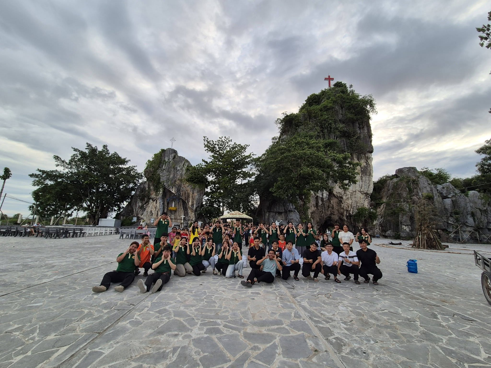

KHÉP LẠI TRẠI HÈ "MẦM XANH TIN YÊU" 2026

"Mọi ơn lành hoàn hảo đều từ trên cao, từ Cha ánh sáng mà xuống." (Gc 1,17)
Khép lại Trại hè "Mầm Xanh Tin Yêu", điều còn đọng lại không chỉ là những khoảnh khắc đẹp, mà còn là biết bao tình thương, sự hy sinh và những tấm lòng đã âm thầm góp sức để làm nên một mùa hè tràn đầy hồng ân.
Trước hết, Xứ Đoàn Phêrô Đoàn Công Quý xin dâng lời tạ ơn Thiên Chúa, vì Ngài đã luôn đồng hành, gìn giữ và chúc lành cho từng ngày trại.
Xứ Đoàn xin bày tỏ lòng tri ân sâu sắc đến Cha Sở, quý Thầy, quý Sơ, quý Ân nhân, quý Ban Hành Giáo, quý hội đoàn, quý Phụ huynh, quý Huynh trưởng, các Anh Chị Cộng tác viên, các cô chú cùng toàn thể các em trại sinh. Xin cảm ơn tất cả vì đã dành thời gian, công sức, những lời cầu nguyện, sự quảng đại và tinh thần phục vụ để cùng nhau làm nên một Trại hè "Mầm Xanh Tin Yêu" đầy ý nghĩa.
Mỗi người một công việc, mỗi người một cách trao ban, có những hy sinh được mọi người nhìn thấy, cũng có những hy sinh lặng lẽ chỉ mình Thiên Chúa biết. Chính những điều nhỏ bé ấy đã kết nối thành một hành trình trọn vẹn, nơi tình yêu được sẻ chia, đức tin được nuôi dưỡng và những hạt mầm hy vọng được gieo vào tâm hồn các em.
Nếu sau những ngày trại, mỗi người biết yêu thương nhiều hơn, biết sống quảng đại hơn và biết đến gần Chúa hơn, thì đó chính là hoa trái đẹp nhất của "Mầm Xanh Tin Yêu".
Nguyện xin Thiên Chúa tiếp tục tuôn đổ muôn hồng ân trên tất cả quý vị cùng gia đình, để những hạt mầm được gieo hôm nay sẽ lớn lên và sinh nhiều hoa trái trong đời sống đức tin.
Xin chân thành tri ân!